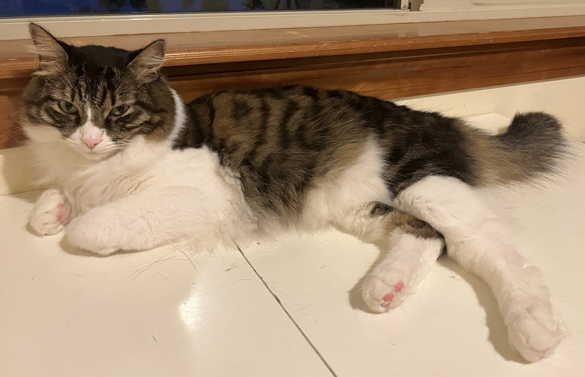
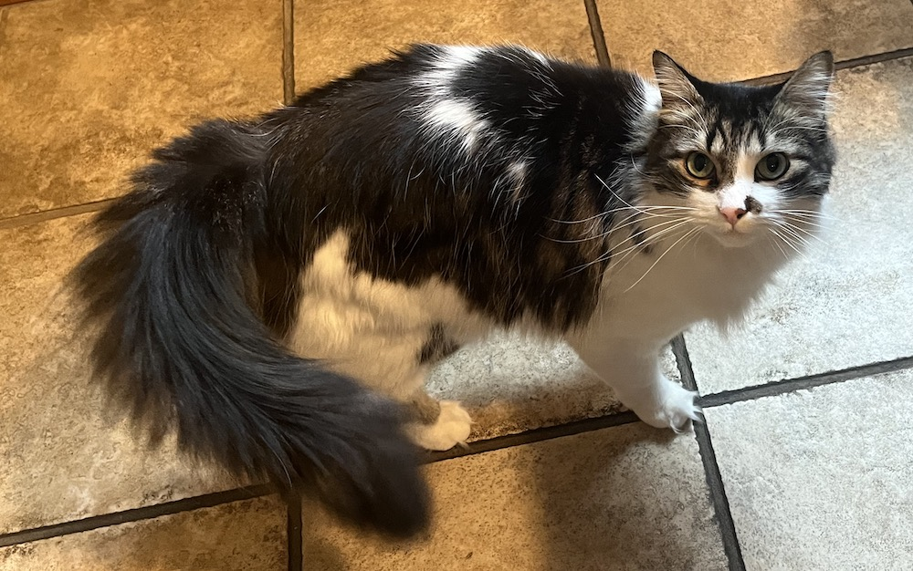

SEAN XU
About Me:
- I am a fourth-year undergraduate physics student at the University of California, Berkeley.
- Broadly, I am interested in making inferences using limited data. Since there will always be uncertainties in data, how well can we constrain the free parameters of a model using that data? In other words, how much useful information can we extract from imperfect snapshots of the universe? Finally, how do we ensure that our data-to-results pipeline is robust?
- More specifically, I am interested in cosmology. Signs of evolving dark energy and the Hubble tension require a better accounting of systematic uncertainties and more data to constrain. New probes of cosmology such as gravitational lensing and gravitational waves can provide independent constraints on \(H_0\) and the dark energy equation of state with different systematic uncertainties.
- Even more specifically, I am currently working on using strong gravitational lensing deflection ratios to constrain the dark energy equation of state. Gravitational lensing is a difficult problem to do Bayesian inference on. As such, in addition to modeling lenses, I have worked on parallelising our lens modeling code, GIGA-Lens, to take advantage of the high-performance computing resources available at the National Energy Research Scientific Computing Center (NERSC). I am also implementing new GPU-based inference algorithms to make lens modeling easier.
- I am from Richland, Washington, home of the world’s largest refrigerated warehouse. Also home to the Laser Interferometer Gravitational-wave Observatory (LIGO), and the Hanford site.
- Here's my CV.
- Here are my two cats, Skittles and Twix.

